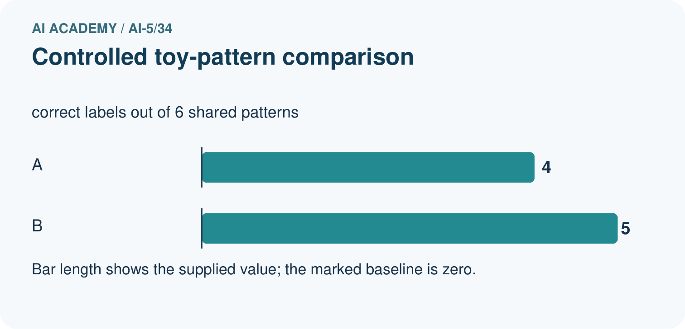
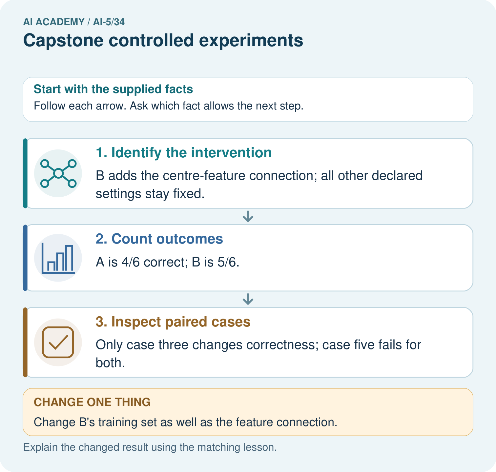
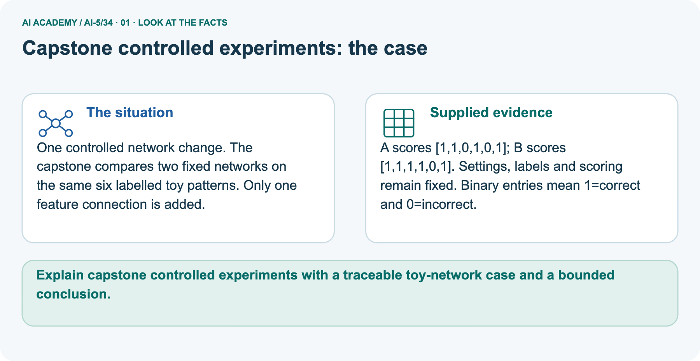
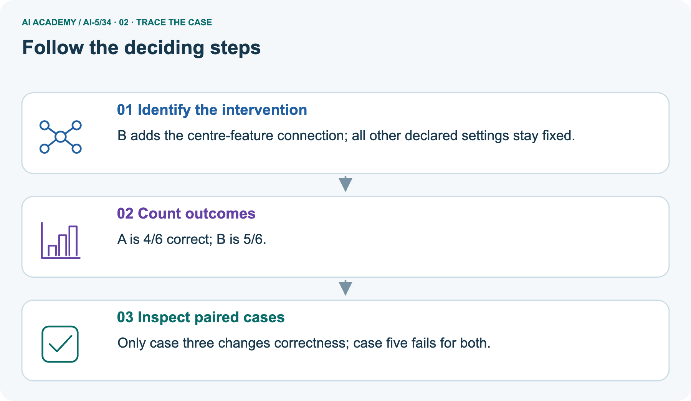
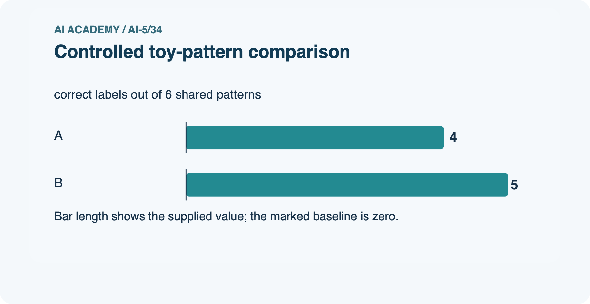
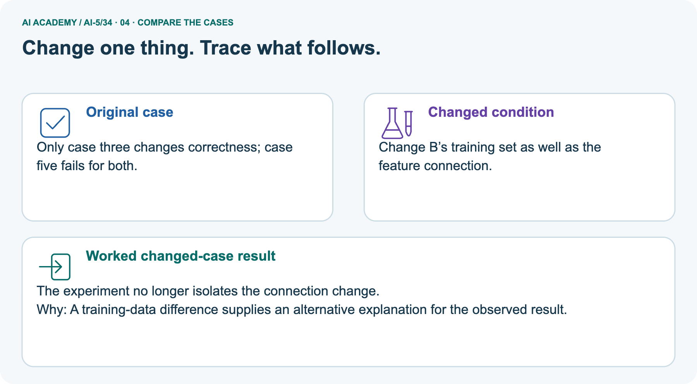
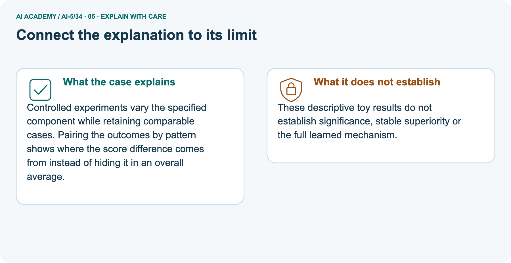
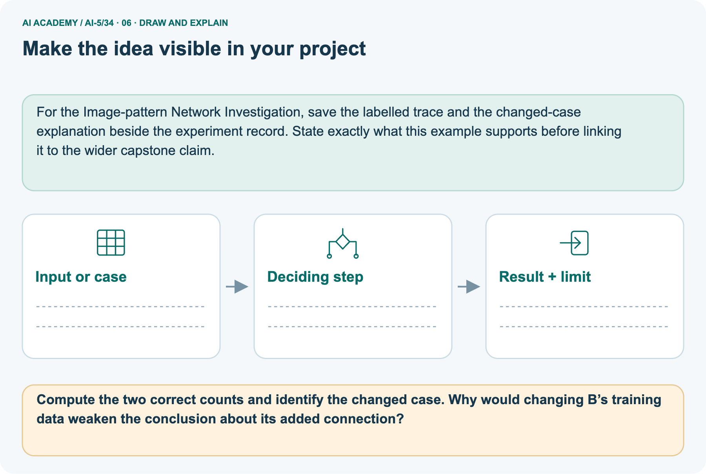

AI Academy · Level 5 · Grade 10 · Week 34 · Workbook
Capstone controlled experiments
Learn to understand, design, build, test and explain AI systems responsibly.
Project: Image-pattern Network Investigation
Workbook · 1 of 15
Recall and choose your starting point
Record your starting explanation for Capstone controlled experiments before opening notes. Show any later correction separately.
Try the recall before opening notes. Then use a different colour or a labelled second line to correct your explanation.
Capstone hypothesis and baseline
Without opening the old lesson, explain one key idea from Capstone hypothesis and baseline. Give an example and a mistake that the idea helps you avoid.
Efficiency and resource measurement
Without opening the old lesson, explain one key idea from Efficiency and resource measurement. Give an example and a mistake that the idea helps you avoid.
Transfer learning
Without opening the old lesson, explain one key idea from Transfer learning. Give an example and a mistake that the idea helps you avoid.
Workbook · 2 of 15
Practise with fading help
Complete the supported Capstone controlled experiments trace and record the first step you can explain without help.
Use W2: Trace both runs for Capstone controlled experiments. Record the answer once; the lesson and workbook refer to the same attempt.
| Given inputs | Procedure I chose | Middle steps | Result and check |
|---|---|---|---|
Workbook · 3 of 15
Individual reasoning check
Check the proposed Capstone controlled experiments explanation against the supplied facts before discussing it.
Use the worked case for Capstone controlled experiments. Proposed explanation: “More runs mean more validation examples”. Decide whether this explanation is supported.
Point to the step or supplied fact that decides; explain your repair if needed.
Workbook · 4 of 15
Independent transfer case
Write one first attempt at the reserved independent case before feedback. Repeated copies of that case refer to the same recorded attempt.
Independent case: Run a new comparison independently
For training (1,3),(2,6) and validation (3,9),(4,12), start a = 1. Compare rates 0.1 and 0.2 for two updates. Gradient is 5*(a-3). Compute final weights and validation MSE, then select lower MSE; ties go to 0.1.
Attempt this case before feedback. Record any help. Earlier examples below are further practice; a case already practised with feedback cannot establish fresh transfer.
Workbook · 5 of 15
W1 Name the controls
Name the controls. Apply the supplied Capstone controlled experiments facts and keep your reasoning.
List six settings held fixed and the single intended changed factor.
Workbook · 6 of 15
W2 Trace both runs
Trace both runs. Apply the supplied Capstone controlled experiments facts and keep your reasoning.
Compute both updates for rates 0.1 and 0.2 using gradient 5*(a-2).
Workbook · 7 of 15
W3 Select without extra evidence
Select without extra evidence. Apply the supplied Capstone controlled experiments facts and keep your reasoning.
Recompute validation MSE for the final weights and apply the written selection rule. How many distinct validation rows were used?
Workbook · 8 of 15
W4 Run a new comparison independently
Attempt before feedback. If this repeats the selected independent case, reuse that first attempt; otherwise keep a separate record. Run a new comparison independently. Apply the supplied Capstone controlled experiments facts and keep your reasoning.
For training (1,3),(2,6) and validation (3,9),(4,12), start a = 1. Compare rates 0.1 and 0.2 for two updates. Gradient is 5*(a-3). Compute final weights and validation MSE, then select lower MSE; ties go to 0.1.
Workbook · 9 of 15
W5 Audit a mixed comparison
Audit a mixed comparison. Apply the supplied Capstone controlled experiments facts and keep your reasoning.
Run A uses rate 0.1 for two updates; run B uses rate 0.2 for six updates and different training rows. Can the difference be attributed to rate alone? Propose a repair.
Workbook · 10 of 15
Project checkpoint and reflection
Connect Capstone controlled experiments to Image-pattern Network Investigation, identify a limit and choose the next useful test.
For Image-pattern Network Investigation, use this week’s independent task as a rehearsal for the final evidence pack: For training (1,3),(2,6) and validation (3,9),(4,12), start a = 1.
Compare rates 0.1 and 0.2 for two updates. Gradient is 5*(a-3). Compute final weights and validation MSE, then select lower MSE; ties go to 0.1.
Keep actual observations separate from expected results, preserve failures, compare a baseline and explain the limits.
Workbook · 11 of 15
Feedback, return check and learning record
Record the first repaired step and a different case to revisit after a delay.
| Evidence | My record |
|---|---|
| Worked alone / hint / model | |
| First step I repaired and why | |
| New case checked later; date and result | |
| What I can now explain without notes | |
| One remaining question |
Revisit this idea with your teacher after a delay. Familiarity is different from explaining and using it on a changed case.
Workbook · 12 of 15
Pictorial case practice: Capstone controlled experiments
One controlled network change. The capstone compares two fixed networks on the same six labelled toy patterns. Only one feature connection is added. Explain the labelled step before checking the changed condition.
One controlled network change. The capstone compares two fixed networks on the same six labelled toy patterns. Only one feature connection is added.
A scores [1,1,0,1,0,1]; B scores [1,1,1,1,0,1]. Settings, labels and scoring remain fixed. Binary entries mean 1=correct and 0=incorrect.


Compute the two correct counts and identify the changed case. Why would changing B’s training data weaken the conclusion about its added connection?
Record the help used
Support used: alone / hint / worked example. This record is practice evidence.
Project connection: For the Image-pattern Network Investigation, save the labelled trace and the changed-case explanation beside the experiment record.
State exactly what this example supports before linking it to the wider capstone claim.
Workbook · 13 of 15
Project portfolio milestone
Keep this week’s input, deciding step, result and limit together in the Image-pattern Network Investigation record.
Project: Image-pattern Network Investigation
Current milestone: Present and defend. Demonstrate the system, explain one failure and justify the next improvement with evidence.
For the Image-pattern Network Investigation, save the labelled trace and the changed-case explanation beside the experiment record. State exactly what this example supports before linking it to the wider capstone claim.
| Evidence to keep | My record |
|---|---|
| This week’s input and deciding step | |
| Prediction and actual result (or labelled paper trace) | |
| One change since the previous checkpoint and why | |
| One error or limit and the next test |
Workbook · 14 of 15
Supported practice and learning evidence
Try the supported questions before comparing with hints and feedback. Record what you repaired and the evidence you retained.
Use this supported practice once, in the browser or on paper. Keep the reserved independent assessment for a separate first attempt before teacher feedback.
One controlled network change. The capstone compares two fixed networks on the same six labelled toy patterns. Only one feature connection is added.
Practice 1: explain the deciding evidence
Which labelled step matches this detail? Only case three changes correctness; case five fails for both.
1. Inspect paired cases
2. Identify the intervention
3. Count outcomes
Hint · try first
Hint if needed: Read the steps in the pictorial case. Match the supplied detail to the stage that performs or records it.
Feedback · compare after trying
After your attempt, compare with the supported explanation: Inspect paired cases Only case three changes correctness; case five fails for both.
Controlled experiments vary the specified component while retaining comparable cases. Pairing the outcomes by pattern shows where the score difference comes from instead of hiding it in an overall average.
Practice 2: explain the deciding evidence
Changed case · predict first
Changed-case practice: Change B’s training set as well as the feature connection. Which conclusion is supported by the supplied facts?
1. This one example guarantees correct results for every future input.
2. We can decide the result without examining the changed input or the procedure.
3. The experiment no longer isolates the connection change.
Hint · try first
Hint if needed: Use the changed condition and the deciding step in the pictorial trace. The answer must say what follows from those facts.
Feedback · compare after trying
After your attempt, compare with the supported explanation: The experiment no longer isolates the connection change. A training-data difference supplies an alternative explanation for the observed result.
Repair a missing building block
Review Capstone hypothesis and baseline (ai-5/33). Goal: Write a testable capstone hypothesis and a credible baseline. Short practice: Name the intended change, the baseline and the measured outcome.
Why must both versions avoid training on the eight reserved labels?. Return to this week and explain what you changed.
Review Efficiency and resource measurement (ai-5/31). Goal: Calculate throughput and amortised time per example from repeated timings. Short practice: Why is 10ms/case not necessarily a single-request latency?
Point to the relevant step in the picture, then write the changed result and the rule or evidence that supports it.. Return to this week and explain what you changed.
Review Transfer learning (ai-5/28). Goal: Trace a reused feature extractor and a newly fitted output head. Short practice: Which part was trained for the new task?
Point to the relevant step in the picture, then write the changed result and the rule or evidence that supports it.. Return to this week and explain what you changed.
Keep your completed work
Use Download completed work in the hosted lesson to export your answers, reflections, practice feedback and code-run evidence. Open the HTML copy to read or print it.
Drafts stay in this browser when storage is available; clear drafts on a shared device.
Workbook · 15 of 15
Visual concept journey
Explain each Capstone controlled experiments picture from its labels, then record a relevant limit.
01. Capstone controlled experiments: the case

One controlled network change. The capstone compares two fixed networks on the same six labelled toy patterns. Only one feature connection is added. Supplied facts: A scores [1,1,0,1,0,1]; B scores [1,1,1,1,0,1].
Settings, labels and scoring remain fixed. Binary entries mean 1=correct and 0=incorrect.
Point to the given fact that matters most. Explain why it matters.
02. Follow the deciding steps

Identify the intervention: B adds the centre-feature connection; all other declared settings stay fixed. → Count outcomes: A is 4/6 correct; B is 5/6. → Inspect paired cases: Only case three changes correctness; case five fails for both.
Point to each numbered stage and explain which recorded input it uses.
03. Controlled toy-pattern comparison

Controlled toy-pattern comparison. Units: correct labels out of 6 shared patterns. A: 4. B: 5.
Read the labels and values. Explain the relationship the model shows.
04. Change one thing. Trace what follows.

Original case: Only case three changes correctness; case five fails for both. Changed condition: Change B’s training set as well as the feature connection.
Expected result: The experiment no longer isolates the connection change. Reason: A training-data difference supplies an alternative explanation for the observed result.
Predict before checking the worked changed-case result. Name what changed and what the supplied facts allow you to conclude.
05. Connect the explanation to its limit

Controlled experiments vary the specified component while retaining comparable cases. Pairing the outcomes by pattern shows where the score difference comes from instead of hiding it in an overall average.
Limit: These descriptive toy results do not establish significance, stable superiority or the full learned mechanism.
Explain the case, then point to a limit on the claim.
06. Make the idea visible in your project

For the Image-pattern Network Investigation, save the labelled trace and the changed-case explanation beside the experiment record. State exactly what this example supports before linking it to the wider capstone claim.
Draw your input, deciding step, result and limit. Supported question: Compute the two correct counts and identify the changed case. Why would changing B’s training data weaken the conclusion about its added connection?
Draw your project trace and justify the deciding step using evidence.